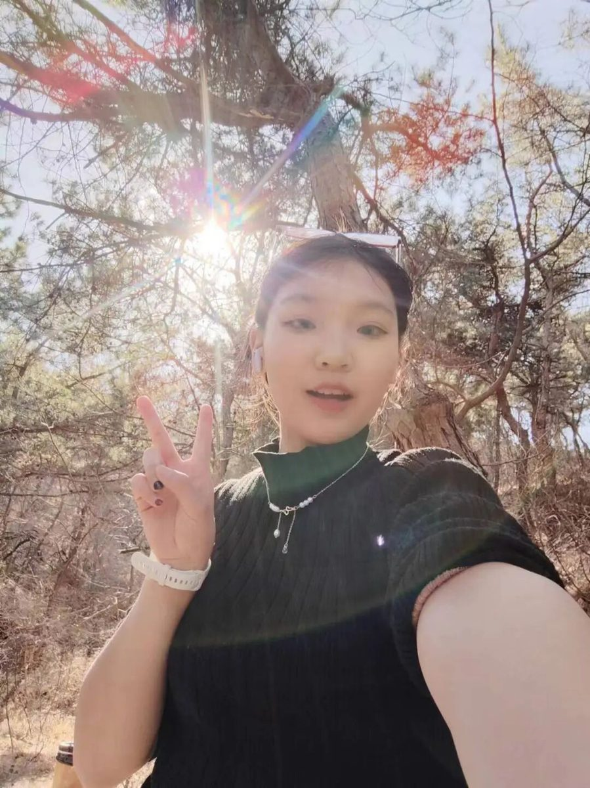
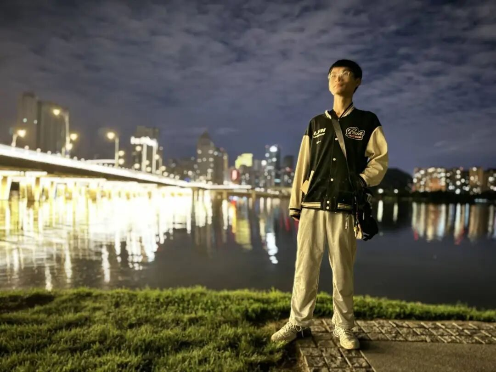
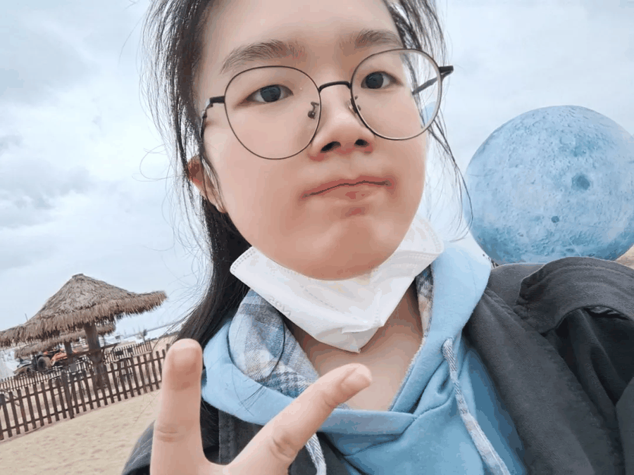
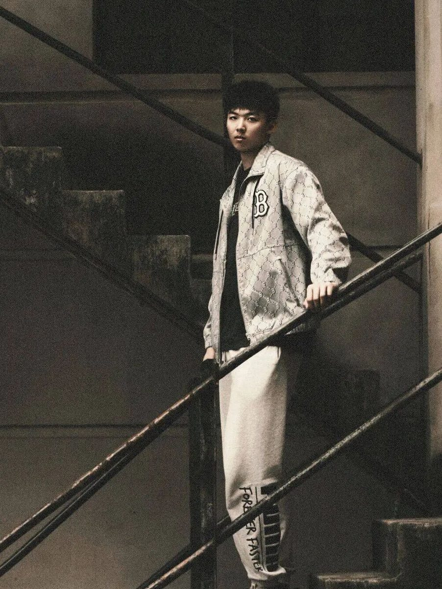
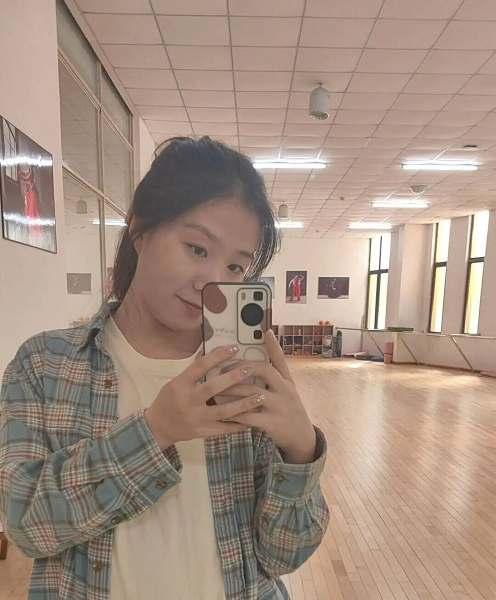
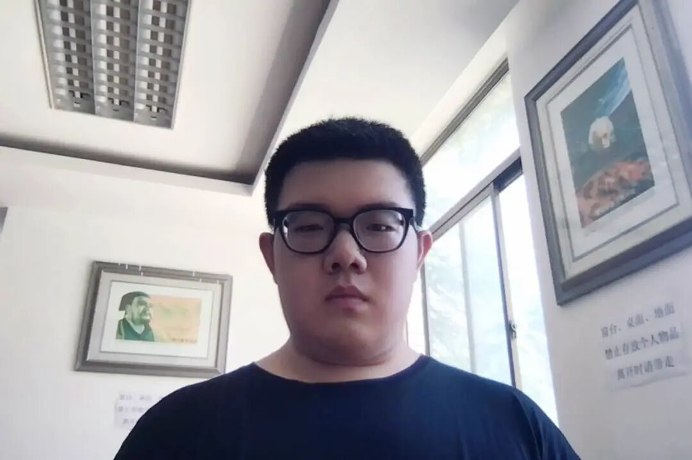

行者无疆·豫旅拾遗 | 集结篇

行
无

第
十
四
期
者
疆

——豫旅拾遗
开封古韵，岁月沉香，
一城宋韵，东京梦华；
风吹洛阳城，花开盛唐梦，
远赴人间惊鸿宴，一睹人间盛世颜。
行者们再次踏上征程，
“豫”见唐宋！

成员介绍

邹靓靓
指导教师
穷理以致其知，反躬以践其实。

张家铭
队长
每段旅途都有意义，行者永远在路上！

李凌志
副队长兼文宣专员
落子无悔，选择本来就是向前。
董昉昱晴
外联兼采访组长
行到水穷处，坐看云起时。

邓雪
调研组长
靡不有初，鲜克有终。
樊星烁
技术组长
去探索，去创造，去发现，去追寻！

孙琦崴
技术专员
“且将新火试新茶，诗酒趁年华！”
张玮欣
后勤兼外联专员
心若有所向往，何惧道阻且长。
王一涵
采访兼文宣专员
不至于前，不止于此。
杩健辉
文宣兼采访专员
错过黄昏晚霞，还有漫天星辰。

刘一诺
采访兼调研专员
Despite knowing the fact and where it
leads,I embrace it.
吴易珊
外联兼技术专员
“我们走过山，走过水，其实只是借助它们走过我们的生命。”
冯天娇
后勤兼采访专员
我们的征途是星辰大海。

焦梓欣
文宣兼后勤专员
心存希冀，追光而遇。
目有繁星，沐光而行。
傅祯延
调研专员
谁终将声震人间，必长久深自缄默；
谁终将点燃闪电，必长久如云漂泊。

王名垚
技术专员
运随心转，功不唐捐。
"豫"见河南，寻根中原
探寻文旅新业态
这个暑期，我们开封、洛阳见！
扫码关注
这个夏天和行者们
一起豫旅拾遗！


来源 | 行者无疆·豫旅拾遗实践团
图片 | 行者无疆·豫旅拾遗实践团
文字 | 行者无疆·豫旅拾遗实践团
排版 | 焦梓欣
审核 | 范伊诺 张家铭